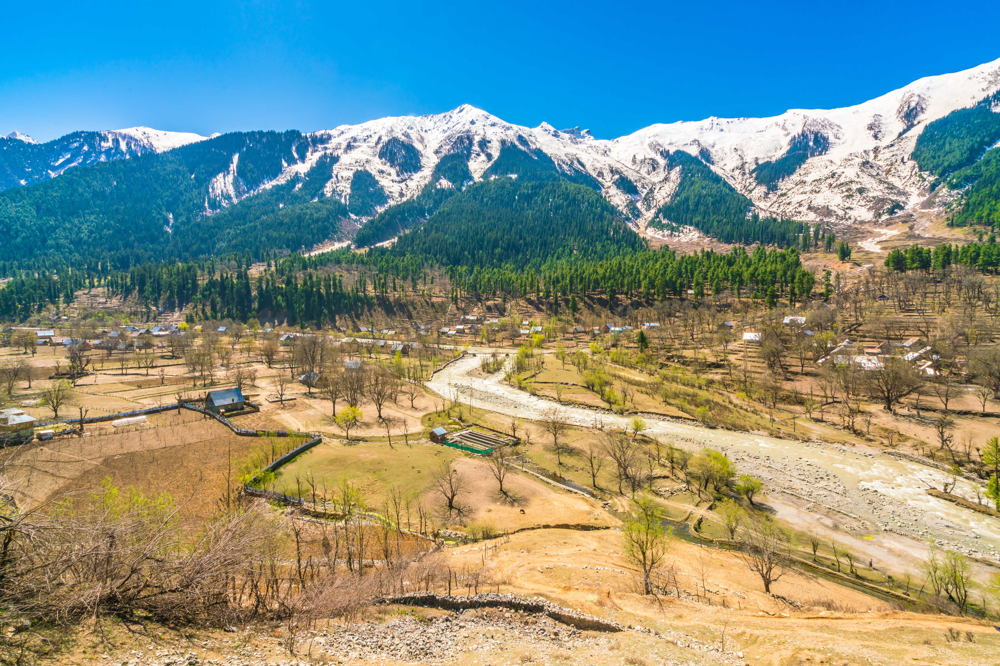

Dive into the world of travel through our captivating blogs. Explore hidden gems, get insider tips, and embark on virtual adventures from the comfort of your screen. Let our stories ignite your wanderlust and inspire your next journey. Adventure awaits with every click.
Explore Some Beautiful Cmaping Sites.

Located in the Himalayas, Spiti Valley is a remote and rugged region known for its stunning landscapes, including high-altitude deserts, snow-capped peaks, and picturesque villages. Visitors can trek through remote trails, visit ancient monasteries, and witness the unique culture of the local Tibetan Buddhist communities....
Rishikesh, situated in the foothills of the Himalayas, is a hub for adventure sports and spiritual retreats. It offers opportunities for white-water rafting on the Ganges River, bungee jumping, zip-lining, trekking in the nearby mountains, and practicing yoga and meditation in serene ashrams....
Zanskar Valley is a remote and pristine region in the Ladakh region of Jammu and Kashmir. It is renowned for its dramatic landscapes, deep gorges, and ancient Buddhist monasteries. Adventurous travelers can embark on treks, go river rafting on the Zanskar River, and experience the unique culture of the region's inhabitants....
Spiti Vally
Nestled amidst the rugged beauty of the Himalayas, Spiti Valley is a place where time seems to stand still, inviting travelers to immerse themselves in its serene charm. As you traverse the winding roads that lead to this remote corner of Himachal Pradesh, you'll be greeted by quaint villages like Kaza and Key, where traditional mud-brick houses blend seamlessly with the dramatic landscape.
But it's not just the picturesque villages that make Spiti Valley special; it's the palpable sense of spirituality that pervades the air. Ancient monasteries, such as the Tabo Monastery with its centuries-old murals and serene ambiance, offer a glimpse into the region's rich cultural heritage.
Trekking enthusiasts will find themselves in paradise as they explore the rugged terrain, with each step revealing breathtaking vistas of snow-capped peaks, crystal-clear rivers, and lush valleys. And for those seeking adventure, the high-altitude lakes like Chandratal, shimmering like jewels amidst the barren landscape, beckon to be discovered.
Yet, perhaps the most remarkable aspect of Spiti Valley is its people. Despite the harsh conditions, the locals exude warmth and hospitality, welcoming visitors with open arms and sharing their age-old traditions and customs.
As you journey through Spiti Valley, you'll find yourself captivated by its raw beauty, humbled by its spirituality, and enriched by the genuine connections forged with its inhabitants. Indeed, Spiti Valley is not merely a destination; it's an experience that leaves an indelible mark on the soul, beckoning travelers to return time and time again.
Rishikesh
Nestled along the banks of the sacred Ganges River, Rishikesh beckons travelers with its blend of spirituality, adventure, and natural beauty. Known as the "Yoga Capital of the World," this vibrant town attracts seekers from around the globe, drawn by the tranquil ambiance and the opportunity to deepen their practice amidst the serene Himalayan foothills.
But Rishikesh is more than just a haven for yogis; it's also a playground for adventure enthusiasts. The mighty Ganges offers thrilling white-water rafting experiences, while the surrounding hills boast scenic trekking trails and opportunities for bungee jumping and zip-lining.
For those in search of inner peace, Rishikesh's numerous ashrams and meditation centers provide a sanctuary for introspection and self-discovery. Whether it's attending a traditional Ganga Aarti ceremony on the riverbanks or delving into the ancient wisdom of Vedanta, every moment in Rishikesh is infused with spiritual energy.
Yet amidst the spiritual and adventurous pursuits, Rishikesh retains its charm as a quaint Himalayan town. Lively markets, bustling cafes, and colorful temples dot the streets, offering glimpses into the vibrant culture and traditions of India.
As the sun sets behind the towering mountains, casting a golden glow over the river, Rishikesh takes on a magical aura, leaving visitors enchanted by its beauty and captivated by its spiritual essence. Whether you seek adventure, serenity, or simply a connection with nature, Rishikesh welcomes you with open arms, promising an unforgettable journey of exploration and discovery.
Zanskar Valley
Tucked away in the remote reaches of Ladakh, Zanskar Valley is a land of rugged beauty and ancient traditions. Surrounded by towering mountains and pristine glaciers, this Himalayan gem offers a glimpse into a world untouched by time.
Traversing the winding roads that snake through the valley, travelers are treated to panoramic views of barren landscapes dotted with picturesque villages and monasteries perched precariously on cliffsides. The Zanskar River, a lifeline for the local inhabitants, carves its way through the valley, creating dramatic gorges and turquoise pools along its course.
But it's not just the awe-inspiring scenery that draws visitors to Zanskar; it's also the rich cultural tapestry woven by its people. The indigenous communities here have preserved their age-old way of life, living in harmony with the harsh environment and practicing ancient customs and rituals passed down through generations.
Trekking enthusiasts flock to Zanskar for its challenging trails, which lead to hidden valleys, high mountain passes, and remote monasteries nestled in the wilderness. In winter, when the valley is blanketed in snow, adventurous souls embark on the legendary Chadar Trek, traversing the frozen Zanskar River on foot—an experience unlike any other.
Whether it's exploring ancient monasteries like Phugtal and Karsha, interacting with friendly locals in quaint villages, or simply basking in the tranquility of the remote Himalayan landscape, Zanskar Valley offers a journey of discovery that is as enriching as it is unforgettable.
Contect US
Please fill out the form below, and we'll get in touch with you shortly